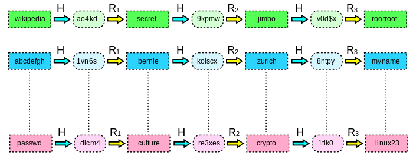

Passwords Rainbow Tables
Table of Contents
This is an introduction to "rainbow tables", in the context of password cracking.
1 Password Cracking
- ../cracking.html Password cracking ideas, and Some Well Known Cracking Tools
- ../password-labs.html
2 Reduction Functions
Reduction functions and crypto hash functions are at the core of rainbow tables. The domain of a (confusingly named) reduction function is hash values. Its range is plaintext passwords.
As an example, we devise a reduction function R() that maps a 4 digit hash ( 0000 to 9999) to a 2 digit (00 to 99) plain text (passwords). For example, a trivial reduction function takes the last two digits of a four digit number, as in r(0823) = 23.
It is worth repeating that the reduction function is NOT the inverse of the hash. In the example above, 0823 was reduced to 23, but 23 does not hash into 0823.
3 Chains
Reduction functions also have collisions. Worse, in fact! One strategy to reduce (but not eliminate) their impact is to use multiple reduction functions.
3.1 An Example Table of Chains of Length 5
Consider the table below, with a single crypto hash function H and two reductions R1 and R2, defined as follows. R1 extracts the last two digits. R2 extracts the first two digits. The missing values of H(x) are explicitly shown in the text.
| p1 | h1 = H(p1) | p2 = R1(h1) | h2 = H(p2) | p3 = R2(h2) | h3 = H(p3) |
| 3 | 3955 | 55 | 4532 | 45 | 3708 |
| 10 | 0823 | 23 | 5603 | 56 | 5850 |
| 25 | 2059 | 59 | 3626 | 36 | 4202 |
| 68 | 3131 | 31 | 3790 | 37 | 5520 |
| 91 | 2554 | 54 | 3213 | 32 | 5109 |
Each row of the table above is a chain. Length = 5.
3.2 Example #1: Reverse the hash 5520
- Look 5520 up in the table column h3 above.
- So, we take 68 and hash it to get H(68) = 3131.
- We apply our reduction function: R1(3131) = 31, say.
- Next, we hash 31. Suppose, H(31) = 3790. We check if 3790 is the hash value we started with (namely, 5520). It is not, so repeat the steps.
- We apply our second reduction function, R2(3790) = 37, say.
- We hash 37. Suppose H(37) = 5520. It is the hash value we started with.
- Our plaintext is 37.
3.3 Example #2: Reverse the hash 3626
- What if our hashed value, e.g., 3626, is not in the table? We apply the reduction function. Since this is essentially walking backwards through the chains, we apply the last reduction function. Suppose R2(3626) = 36. Hash that number, H(36) = 4202, and try the algorithm again.
- We see that its corresponding value for p1 is 25. Now we can go on to next step: H(25) = 2059.
- Is 2059 the hash number we are looking for? No, we looking for 3626, so on to step 4: R1(2059) = 59. Back to step 2: H(59) = 3626.
- Step 3: Is 3626 the number we’re looking for? Yes! Therefore, 59 is its plaintext.
3.4 Exercise: Reverse the hash 2554
4 The Rainbow Table
Rainbow Table RT stores the left-most column and the right-most column of the table above. And, we calculate the other columns as needed. That is, we use 10 entries in the RT to represent the 30 entries in table above. Of course, the cost is a tradeoff between size and speed.
The length of the chains in the example above was 5. Real life rain tables have 10x, x > 4, chains.
Note that the rainbow table is specific to a hash function H such as MD5 and SHA1.
4.1 Example from Wikipedia

Figure 1: Rainbow Table Computations, H hash, R Reduction [source: Wikipedia]
[This nice figure, is unfortunately not well explained in the Wikipedia. Hope the following is good enough.] The R stands for a "reduction" (confusingly named) function. Recall that H-inverse is a relation, not a function. The R is subset of this relation. R(a) = z such that H(z) = a. Recall that there exist x, such that x != z but still H(x) = H(z) = a. The R is constructed to yield z instead of x because of "other reasons". Recall also that the number of digits in a is fixed, based on H, but the plain text arguments of H are of arbitrary length; in the figure the length ranges from 5 to 9. The number of digits in the range of H should have been fixed, but in the figure it is either 5 or 6.
TBD "A password rainbow table stores hash chains for various passwords. A password chain is computed, starting from the original password, P, via a reduce (compression) function R and a hash function H. A recurrence relation exists where Xi+1 = R(H(Xi)), X0 = P. Then the hash chain of length n for the original password P can be formed: X1, X2, X3, … , Xn-2, Xn-1, Xn, H(Xn). P and H(Xn) are then stored together in the rainbow table."
5 Are Rainbow Tables Effective in Cracking?
- Even a single bit is enough to resist rainbow tables if you use properly salted hashes. – CodesInChaos Jun 10 '14 at 8:56. {pm Elaborate properly}
- What is the Length of passwords that are rainbow table safe ?
- Rainbow tables have a limited use. Most algorithms these days employ salting. For each value of the salt you need a new rainbow table. E.g., saltedhash(password) = hash(hash(password) + salt)
- The salt must be large enough, otherwise an attacker can make a table for each salt value.
- Another technique that helps prevent precomputation attacks is key stretching. The salt, the password, and a number of intermediate hash values are run through the underlying hash function multiple times. The extra time is not noticeable to a user because the user only has to wait a fraction of a second each time the user logs in. On the other hand, stretching greatly reduces the effectiveness of a brute-force or precomputation attacks.
6 Computing the Rainbow Tables
- There are many examples RTs, already computed, available. Not all free.
- We can compute hash values for every possible string of characters. Obviously, such tables are large (TBs).
- http://project-rainbowcrack.com/ has freely downloadable executables (rtgen, …) for all major OS. rtgen: generate rainbow tables, rsort: sort the rainbow table; rcrack: find the password.
- http://project-rainbowcrack.com/table.htm A List of Rainbow Tables. Key space of 13,759,005,997,841,642.
- http://rainbowtables.shmoo.com/ Released at ShmooCon 2005.
6.1 Computing the Rainbow Tables in the Cloud
- https://github.com/mcandre/painbow Painbow is a scalable rainbow table, able to handle petabytes of passwords and hashes. Just point painbow to a [Apache] Cassandra cluster node and enter some passwords to index.
- Avinash Kak, Purdue University, "The Dictionary Attack and the Rainbow-Table Attack on Password Protected Systems; Lecture Notes on "Computer and Network Security", 2016, 53pp. Recommended Reading https://engineering.purdue.edu/kak/compsec/
7 References
- List of Password Cracking Tools
- http://project-rainbowcrack.com/table.htm Lists free and paid Rainbow Tables.
- Section 5 is a rewrite of posts under Rainbow Tables by "paul" at https://stichintime.wordpress.com/
- http://kestas.kuliukas.com/RainbowTables/ is a pretty good explanation. But, the diagrams can be better. (i) The domain and range "circles" are equal in diameter confusing the student. (ii) The reduce diagram (fig #2) even more confusing. (iii) The comment that the name "reduction" was "unhelpfully named" is good. Reference.
- Rainbow Tables Generator. http://www.oxid.it/downloads/winrtgen.zip